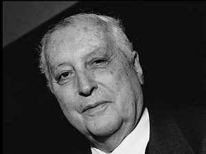

ILYA PRIGOGINE
Jochen Winter'in uyarladığı versiyondan tercüme edilmiştir.
Rus kökenli Belçikalı fizikçi ve kimyacı Ilya Prigogine (1917 yılında Moskova'da doğdu, 2003'te öldü) 1921 yılında ailesiyle birlikte Rusya'dan göç etti. Berlin'de geçici bir süre kaldıktan sonra Brüksel'e yerleşti. 1940'lı yılların ortasından beri tersinmez termodinamik süreçlerin incelenmesini eksen alan Prigogine'in bilimsel çalışması, sanata ve felsefeye olan güçlü eğilimlerinden büyük ölçüde yararlanmıştır. Prigogine'in keşifleri ölü maddeden canlı maddeye geçişi tanımlamayı sağlayan temelleri atarak, kimyanın ve biyolojinin çok ötesinde, otomobil trafiği, böcek toplulukları, kanserli hücrelerin büyümesi, hatta toplumsal sistemlerin analizi gibi çeşitli alanlarda devrimci uygulamalara vardı. Kimya dalında Nobel ödülü Prigogine'e 1977 yılında verildi. Prigogine "zamanın yeniden keşfi"nden söz eder, çünkü Newton ve Einstein bu boyutun insan zihninin dışında var olmadığı görüşündeydiler. Prigogine'in çözümü "zaman oku" dediği şeydedir: "Zaman, olasılıklardan biri olan gerçeği yapma rolü oynar. Düzenli ve düzenli olmayan nesnelerin varlığı, zamanın etkisine bağlıdır."
Fransızcaya çevrilmiş eserleri arasında şunları sayabiliriz: De l'être au devenir (Alice, 1999), Les lois du chaos (Flammarion, 1999), L'homme devant l'incertain (O. Jacob, 2000), La fin des certitudes (O. Jacob, 2001).

PRIGOGINE
Ilya Prigogine, insan varlığı ile doğa arasında yeni tür bir diyalog vaat eden, fizikte ve kimyada dinamik, karmaşık ve tersinmez süreçler üzerine araştırmalarınızla birlikte, dünyanın günümüzdeki bilimsel imgesinin oluşumuna katkıda bulundunuz ve bu imgenin devrimci olduğu kesinlikle söylenebilir. Bu imgenin, Francis Bacon, Galileo, Descartes, Newton ve ardıllarının önerdiği klasik, mekanik ve nedensel modellerden hangi temel yanlarıyla ayrıldığını kısaca açıklayabilir misiniz?
Günümüz bilimi bize klasik bilimden son derece zengin, daha istikrarsız, daha şaşırtıcı, ama aynı zamanda daha tehlikeli bir dünya keşfettirdi. Klasik bilimin kurucuları doğa yasalarının global olduğu kadar hareketsiz de olduğunu, varolan her şeyin, meydana gelen her şeyin, rasyonellik postuatına cevap veren homojen şemalar yardımıyla açıklanabileceğini kabul etmişlerdi. Doğa olaylarının, en azından prensip olarak, giderek daha küçük elementlere sürekli indirgenmesi yoluyla kavranabileceği ve buradan çıkarsanacak aksiyomların bir süre sonra bilimin bütün çatlaklarını doldurmakla kalmayıp –verili başlangıç koşullarında– sonsuz geçerlilik taşıyacağı da sanıldı. Bu yaklaşımla birlikte klasik bilim eşi benzeri görülmemiş bir başarı kazandı: onun teorik hipotezleri ile deneysel cevapları arasında şaşırtıcı bir denklik görülür. Ama o zamandan beri biliyoruz ki doğa bilimlerinin temel sorunlarının çok çabuk çözülebileceği fikri bir yanılsamadır ve dünyanın az çok basit, içkin matematik yasalara sonsuza dek uyan bir otomat gibi davrandığını varsaymak da bir idealleştirmedir. Determinizm ve tersinirlik, fiziksel-kimyasal sistemlerin dengede kaldıkları sınır durumlar için geçerlidir ancak. Zamanın geri kalanında tersinmezlik ve determinist-olmama kural gibi gözükmektedir. Bunun anlamı, vaktiyle araştırma dışı bırakılmış olan ve arzulanmayan karışıklıklar diye kabul edilen tersinmez süreçlerin, genellikle doğanın kendi kendine örgütlenmesinin, yani aniden ortaya çıkan ve dengeden uzaklaşan madde hallerinin temeli olmalarına bağlı olarak tam da bir ilgi merkezi olmalarıdır. Bu haller, tesadüfün ve zorunluluğun çoklu diyalektiğinin sonucudur ve burada küçük değişiklikler önemli değişimlere yol açabilir ve yeni bağdaşıklık ve etkileşim biçimleri ortaya çıkartabilir. Böylece önemli bir rol zamana düşer: Zaman yalnızca bir hareket parametresi olmakla kalmaz, aynı zamanda bir dengesizlik uzamı içindeki evrimleri de ölçer. Yaratıcılık niteliği vardır ve bu nedenle, makrokozmik düzeyde olduğu kadar mikrokozmik düzeyde de devindirici bir güç olarak işlev görür. İster astrofizik olsun, ister elementer partiküller fiziği, biyoloji ya da kimya, bütün disiplinlerde anahtar bazı kavramlarımız var. Evrim, çeşitlenme, istikrarsızlık gibi bu kavramlar dikkatimizi canlının artan karmaşıklığına çekerler. Tek bir formülle bunu özetlersek: Gelecek zaman, şimdiki zamanın içinde kapsanmış değildir. Bu bağlamda, klasik bilime yabancı olan bir doğa kavrayışına varmamız kaçınılmaz oluyor.
Bu durum farklı teoriler arasında aşılmaz bir uçuruma mı yol açıyor?
Hayır, benim çalışmam evrim süreçlerini fiziğin temel yasaları içine dahil etmekten ibarettir. Newton'un aksiyomlarının bazı sistemlere uygulanabilir olduğunu tartışmıyorum; ama yalnızca bunların kabaca basitleştirildiği durumlarda, tersinir niteliği bizim en kişisel deneyimimizle ve çevremizde gözlemlediğimiz tersinmez olgularla çelişki içinde olan istisnalar yapıldığında uygulanabilir. Gezegenlerin Güneş etrafındaki dönüşünün, örneğin, çekim yasalarına boyun eğdiği elbette kesindir, ama bu yalnızca yoğun kütleli olan cisimlerle kütlesi daha az yoğun olanlar arasındaki çekim için geçerlidir. Bu durum, bu gezegenlerin her birinde olup bitene dair, buralarda cereyan eden jeolojik ve hatta biyolojik süreçler üzerine bir şey söylemiyor. Örneğin Venüs Jüpiter'den tamamen farklı maddelerden oluşmuştur. Bu olgu yalnızca yeni ve büyüleyici olmakla kalmaz, ayrıca evrenin tükenmez zenginliğinden ve son çözümlemede, tersinmezliğe bağlı güçten de kaynaklanır. Her gezegenin kendine özgü bir dönüşü vardır, ama eşzamanlı olarak, bütün dönüşler aynı yöndedir; tıpkı bizim, sizin ve benim, aynı yönde yaşlanmamız gibi. Bütün yapılar, daha önceki dönüşümlerin ve dal budak salmaların sonucu olan yüksek karmaşıklık dereceleri elde etmek için geleceğe yönelmektedir. Benim geleneksel bilime katmak istediğim şey özellikle bu fiili durumdur ve sanıyorum ki çalışma arkadaşlarım sayesinde ve yetkin matematik yöntemlerle, doğa yasalarına dair anlayışımızı gözden geçirmeyi başardım.
Sizin ana hatlarını belirttiğiniz şekilde, doğa bilimlerinde paradigma değişimi beşeri bilimleri, özellikle de Claude Lévi-Strauss'un belirttiği anlamda her zaman terazi gibi, denge gibi işlemesi gereken felsefe ve antropolojiyi nasıl etkiler?
Batı metafiziği öncelikle varlık üzerinde odaklanmıştı. Günümüzde Varlık ontolojisi, statik töz ve bir Oluşum ontolojisi arasında geçiş meydana geliyor. Bu evrede, zamanın etkilerine ve evrim olgularına dair daha derin bir kavrayış ediniyoruz. Bunların bizi nereye götürdüğünü tam olarak bilemiyoruz, önümüzde sayısız olasılık açılmakta. Üçüncü binyılın başında, geleceğe açılan kapının ardına kadar açık olduğunu, dünyanın kapalı ya da tamamlanmış olmadığını, oluşum halinde olduğunu ve sonuç olarak kararlarımızın özel bir ağırlığı olduğunu saptıyoruz. Varoluşsal kaygımız buradan kaynaklanıyor: Efendi olmaktan daha kolay köle olunduğunu belirten Hegel'in fikrini dikkate alarak, yarının nasıl şekillendirilebileceğini kendimize acilen sorarız. Doğa süreçlerinin karmaşıklığına dair en iyi bilgilere sahip olduğumuz ve dolayısıyla giderek artan bir sorumluluk taşıdığımız için bunu yaparız. Ayrıca, son derece çeşitli bu engin evrende giderek daha küçük ve ayrıcalıklı bir yer işgal ettiğimizin bilincine de varıyoruz; çünkü bizi ayırt eden şey yaratıcılıktır. Yaratıcı zekâ yenilik yaratır ve bu konuda doğaya benzer, o da kendi açısından hiç durmadan yenilikler yaratır. Klasik bilimin arzuladığı gibi, önceden belirlenmiş bir hedefe yönelmek yerine, son derece yenilikçi olarak ortaya çıkar. İnsan varlığı için bunun anlamı, pasif, sessiz, ölü bir doğa karşısında, bu doğayı monolog tarzında tekyanlı bir sorgulamaya tabi kılmak ve böylelikle onu büyübozumuna uğratmak için izole olmadığıdır; tersine, onunla iletişime girerek, yaratıcı ve hatta sanatsal faaliyetleri, içkin ve incelikli bir diyalogla anlamaya çalışır. Her ikisi de, insan da doğa da, zamanın yaratıklarıdır; bu nedenle bile olsa, birbirlerine ayrılmaz biçimde bağlıdırlar. Zamanın tersinmez karakterini araştırmaya çalıştığımız ölçüde, bizi çevreleyen ve tüm diğer canlı yaratıklar gibi bir etkileşim ağının içine katan dinamik sürecin kavranmasına yaklaşırız. Şu an için bu yoldaki ilk adımlarımızı atıyoruz ve çabalarımızın ürünü doğanın dönüşümleri kadar belirsizdir.
Zamanın tersinmez okunu entelektüel binanızın dayanağı yapmak için hangi teorilere gönderme yapıyorsunuz? Hangi bilim insanlarını öncelleriniz olarak kabul ediyorsunuz?
Benim niyetim, başlangıçta, Avusturyalı fizikçi Ludwig Boltzmann'ın eserini sürdürmekti. O, tıpkı biyoloji alanında Darwin gibi, fizik alanında evrimin bir öncüsü olarak kabul ediliyordu. Einstein ise bizim gelişme halinde olan bir evrenin parçası olduğumuzu gösterdi ve böylece modern kozmolojiyi kurdu. Ama esasen zamandışı olan bir kozmos fikrine bağlı kalmıştır. Bunun ise bir hata olduğu, herkesin kabul ettiği büyük patlama teorisinin ardından ortaya çıkmıştır. Bu teori, yeni yıldızların ortaya çıktığı ve belirli bir anda kara deliklerde yok olduğu, zamana bağlı ve genişlemekte olan bir evren senaryosu çizer. Bütün fizik yasalarını biricik ve homojen bir alanın birleştirici teorisinde toplama yönündeki Einstein'ın –başarısız kalmış– çabası, Feynman ya da Hawking gibi günümüzün bilimsel anlayışlarında yansır. Bunlara göre doğa çok sadedir, klasik mekanik ile kuantum mekaniğinin az sayıdaki yasasıyla tanımlanabilir; genellikle de evrensel bir formülle yapılır bu. Benim bakış açımdan bunlar, doğanın olağanüstü çeşitliliği karşısında işlemeyen bir Varlık biliminin kalıntılarıdır. Ne kadar farklı türde karınca, kelebek ya da virüsün bu gezegen üzerinde var olduğunu düşünebiliriz. Örneğin, sürüngenlerin kuş olmasına dair akla yatkın hiçbir açıklama olmadığı gibi, bunun nasıl olduğuna dair de açıklama olmadığını unutmayalım. Darwinci teori kuşların çevreye sürüngenlerden daha iyi uyum sağladıklarını ileri sürüyordu, ama bu doğru değildi: yalnızca birkaç sürüngenin kanatları gelişti, daha da tuhafı, kimileri daha uçamazken tüyleri çıkmıştı. Aynı fikir maymunlar için de geçerlidir: insanlar bir ya da birkaç özel türden yola çıkarak gelişti; içlerinden çoğu ise maymun olarak kaldı. Dönüşümün büyük bölümü burada gerçekleşmiş olmalıdır, genom düzeyinde nasıl tezahür ettiklerini ise bilmiyoruz. Madde ile yaşam arasındaki, yaşam ile yaşamın evrimi arasındaki büyük geçişler, çözümlenmemiş muammalardır; tıpkı evrenin kökeni ve evrimi gibi. Bundan böyle, bilimin oluşumun mekanizmalarını tematikleştirmekten kaçınamayacağı inancını edindim; yirmi birinci yüzyılda bilimin karşılaşacağı gerçek meydan okuma bu olacak. Başka deyişle: Einstein'ın görecelik teorisi Öklitçi olmayan bir geometriye dayanırken, oluş bilimi daha ziyade bir anlatı bilimidir, Binbir Gece Masalları'yla karşılaştırılabilir. Şehrazat bir hikâye anlatır, ara verip, ertesi akşam daha güzel bir diğerini anlatır, sonra daha güzel bir başkası. Bizim perspektifimize uygularsak: Kozmolojik bir hikâye vardır ve bunun içinde maddenin hikâyesi gelişir, o da yaşamın hikâyesini içerir, sonuçta buradan da insan varlığının hikâyesi kaynaklanır. Bu anlamda, anlatısal bir öğeden söz edebiliriz, hatta doğanın romanından, ki bunu çözmeye başlıyoruz. Oluşumu kavramaktan ibaret yöntemi uyguladığımızda, yeniliği, yaratıcılığı, yani aynı zamanda kendi kendimizi anlamaya çaba gösteririz. Bir Michelangelo'nun ya da bir Beethoven'in eserleri, insani ölçütlere göre, etkileyici bir yaratıcılığın tanıklıklarıdır. Bunların kozmik ölçekte ne anlama geldiklerini değerlendiremeyiz; ama bu bizim işimiz hiç değildir.
Sizin dünya resminizde, en küçük şey de en büyük şey de mucize, sır ve güzelliğin damgasını taşımaktadır ve mevcut haliyle doğa bilimleri buna giderek daha fazla saygı göstermektedir. Ama bu durumun, insan-merkezli kavrayışın açık ve net reddiyle atbaşı gittiği açıkça ortadadır: İnsan varlığı özellikle yaratıcılığı ve bu arada edindiği bilgi sayesinde, doğa ve kozmos karşısında merkezi konum talep edemiyor artık; kendi düşüncesini ve edimlerini her noktada onu aşan ve her yerde hazır ve nazır bir düzenin yasalarına uyarlaması gerekiyor.
Kopernik ve Kepler dünya-merkezli sistemden güneş-merkezli sisteme geçişi başlattılar; o zamandan beri insanın kozmostaki konumu sürekli göreceli bir hal aldı. Galaksilerin ve kozmik olayların fotoğrafları gözlemlendiğinde, ardından uyduların bizim küçük yerküremizden bize aktardıkları fotoğraflar gözlemlendiğinde, insan-merkezli perspektife bağlanmakta güçlük çekeriz. Bu görkemli manzaranın görünümü zihniyet evrenimizi kökten dönüştürür. Buna en yakın filozof belki de Giordano Bruno'ydu, ona büyük bir hayranlık duyuyorum. Odunlarda yakıldı çünkü sonsuz bir tanrısal gücün sonsuz sayıda evreni zorunlu olarak yarattığı sonucunu spekülasyon yoluyla çıkarmıştı. Tek bir evren, Tanrı için olduğu kadar insan varlığının maharetli zekâsı için de, bütün hudutları aşan bu zekâ için de zorunlu koşulları yerine getiremez. Kilise için bu düşünce katlanılır değildi, çünkü sayısız evrenin varlığı, kurtarıcılık işlerini sonsuzlukta gerçekleştirecek sayısız mesih kişisine çağrı yapıyordu. Oysa bu İsa'nın biricikliği dogmasını geçersiz kılmaktaydı ve kilisenin elinden ruhların evrensel kurtuluşuna göz kulak olma yönündeki sınırsız iddiasını alıyordu. Bruno'nun kararlılığı, büyük bir coşkuyla savunduğu tezleri çürütmeyi reddedişi beni her zaman etkilemiştir. Bütün bunlar temel varsayımlarımızdan birini öngörür: Kökensel enerjinin ancak sonsuz sayıda evrende tam anlamıyla gelişebileceği fikri. Sonuç olarak, düşüncemizin ufku evren-merkezliliğe doğru genişler.
İnsan bu bakışı içselleştirdiğinde, kozmik uyuma değer verdiğinde, hatta saygı gösterdiğinde, kendine ve yeryüzündeki yaşama dair daha derin bir kavrayışa erişmez mi? Bu durumda bilim ile din arasında yeni bir sentez oluşturmak zorunlu olmaz mı? Einstein da kozmik dinselliğin bilimsel araştırmanın en güçlü ve en soylu içgücü olduğunu yazdığı Dünya Görüşüm ya da Din ve Bilim adlı denemelerinde bunu ima etmektedir.
Bana göre bilim ile din arasında ilke bakımından çelişki yoktur, tersine, bilim bize Einstein'ın bütün hesaplarını ve hayalgücünü aşan bir evren sunmaktadır ve dolayısıyla dinsel duygular, hatta bir kutsallık önsezisi bile uyandırabilir. Mekanikçi argümanlara başvurarak dünya bir otomatla ve insan varlığı da bir makineyle karşılaştırıldığında, bu tür itkilere yer yoktur. Yaşamın ve bilincin karmaşıklığına giderek daha derinden nüfuz ettiğimiz ölçüde, şaşkınlığımız bizi kutsal bir şeyler düşünmeye yöneltir. Yine de geriye, bu düşüncenin nereye bağlanabileceğini bulmak kalır, doğaya mı Tanrı'ya mı? Aşkınlık fikrinin kökeni ya doğadadır ya da doğanın dışında, doğaüstü bir yaratıcıda. Günümüz insanının öncelikle içkin aşkınlıkla, giderek ayrıntılanan biçim ve yapıların doğduğu kendiliğinden süreçlerle ilgilendiği kanısındayım. Bununla birlikte, bunun anlamı bilimin kesin bir açıklama getirebileceği ya da dinin, göksel bir uyuma gönderme yaparak, bu dünyadaki bütün sorulara cevap verebileceği değildir. Dünya yanlızca uyumlu ve güzel olmakla kalmaz, aynı zamanda konuksevmez ve acımasızdır; ıstırap yaşamın ve hatta evrenin trajik yanını aklımızda tutmamızı ve yersiz idealleştirmelerden kaçınmamızı sağlar. Kesin olan tek şey, bu dünyanın yaratıcılığa gömülmüş olduğudur ve Teilhard de Chardin gibi bir düşünür özellikle bu konuya yoğunlaşmıştır. Ama bir Hristiyan olarak, Cizvit olarak, derhal insan varlığını hedefleyen doğanın evriminin bir alfa noktasından başlayıp bir omega noktasında tamamlandığını, bunun da doruğa denk düştüğünü kabul ediyordu. Daha sonra meydana gelmesi gereken şey tanımlanamaz. Bu, Dante'nin İlahi Komedya'sını hatırlatır: Lanetlilerin cehennem azaplarını tarif etmek, seçilmişlerin cennetteki mutluluğunu tarif etmekten daha kolaydır.
Modern zamanlar kesin bir rasyonalitenin, değerlerden kopmuş bir arayışın ve müspet bir bilginin diktası altındadır ve bu arayış ile bilgi, başta da belirttiğim gibi, teknik uygulanabilirlikleri nedeniyle büyük zafer kazanmışlardır. Bilimsel inceleme insan varlığının ampirik gerçekliği tarafından, yani zamansallığı, doğaya entegrasyonu, gözlemlediği şeyden asla ayrılamaz olan gözlemci bakış açısı tarafından tamamlandığı ölçüde, logos ve mit asla birbirlerinden kesin olarak ayrılmış gözükmezler: Bunlar tek ve aynı bilincin tamamlayıcı iki yansısıdır ve bizler yaşamın muammasını bu bilinçle çözmeye çalışıyoruz..
Logos ve mit de birbirlerini, tıpkı bilim ve din gibi, pek az dışlar. Mit logos'un çerçevesini çizer ve onu tamamlar, çünkü bilmemenin sonsuz gecesi bizim bilgimizin ötesinde uzanmaktadır. Aşkınlık, mite erişmemizi sağlayan aşkınlık, özellikle bu bağlantı noktasında başlamaktadır. Bu aşkınlığa pek az değer verildiğinde –hele ki reddedildiğinde– yalnızca kendi cehaletimizi kanıtlamış oluruz. Bu tür bir insana gündelik ihtiyaçları karşılamak yeterli gelir. Her faaliyetin, her hareketin, yıldızlarla dolmuş evrenin kulisleri karşısında cereyan ettiğini unutur. Bundan böyle, kozmosun keşfi, bizim dışımızda hâlâ bir şeylerin varlığını anlamamızı sağlayan yenilikçi bir girişimdir.
Batı uygarlığının yüzünü başka kültürlere –örneğin Hint, Çin ya da Latin Amerika kültürlerine– daha net olarak dönmesi sizce iyi bir şey midir? Bu kültürlerin, tinsel deneyimlerinin ve insani değerlerinin damgasını taşıyan geleneklerinin insan ile doğa ve kozmos arasındaki kopmuş bağı onarması mümkün olamaz mı?
Hayır. Hint'te, Çin'de ve Latin Amerika'da protohistoryadan bu yana mevcut toplumsal eşitsizlikler zaman içerisinde iyice arttığından, insan haysiyeti üzerine onlardan pek bir ders alamayız. Tinsel ya da felsefi açıdan da kuşkucuyum. Buda kuşkusuz ki belli bir yakınlık hissettiğim ve çarmıhtakine tercih ettiğim –çünkü o ıstırapla eşanlamlı ve bizim sorunlarımıza gerçek bir çözüm sunmuyor– dinsel bir sembolü temsil etmektedir. Bir Buda heykeline baktığımda, kendi kaderini düşünen ve belki de böyle kurtulabilecek insanı görürüm. Ama Buda'nın aradığı çözüm benim çözümüm değildir: O, dünyadan kurtulmak istiyor, hüzünlü ve aşağılık bir dünyadan kurtulmak, sonuç olarak doğumun getirdiği döngüyü parçalamak istiyor. Bense, tersine, yaşamın hüzünlü ve boşluklu kalmasını, pek az insanın burada yer bulmasına, savaşların, etnik temizliklerin ve aynı türden diğer felaketlerin yaygın olmasına bağlıyorum. Kolektif kötülüğü, geçici her şey gibi, yanılsama olarak nitelemektense, köklerinden yakalamak ve Budizmin istediği gibi hiçliğe teslim etmek gerekir. Konfüçyüsçülük ise, öncelikle kesin olarak saptanmış davranış çizgilerine dayanır: ebeveyne, yasalara saygı, kargaşa tohumları ekmeme zorunluluğu –artık her toplumsal dönüşümü reddeder. Ben bu tür düşünceyle uyuşamam.
Ama bu durumda hangi yöne doğru gidiyoruz? Üçüncü binyıl hangi fikirleri, hangi ütopyaları, hangi mitleri hazırlayacaktır?
Bir süre önce, kamusal yaşamda etkin bir rol oynayan iki yüz elli kişiye bu konuda sorular soruldu. Tek bir cevap egemendi. Bu binyılın insan varlığının doğayla ve kendi komşusuyla daha uyumlu bir ilişki altında olmasını görme umudu ifade ediliyordu. Benim ütopyam da budur. Bu hedefe erişebilmemiz için uluslar arasındaki bölünmelerin ortadan kalkması gerekir ve krizlere ya da çatışmalara yol açan keyfi politik kararlar alma eğiliminin sınırlandırılması gerekir. Barışçıl bir Avrupa'dan yana çabalar meyvelerini verdi bile: Avrupa Birliği günümüzde geçmişte olduğundan daha homojen, öyle ki artık örneğin Almanya ile Fransa arasında bir savaş düşünemeyiz. Bütün kıtalarda ulus-aşırı örgütler önemli bir rol oynuyor. Bütün düşmanlıklara rağmen, söz konusu ülkeler arasında daha yoğun bir işbirliğine imkân tanıyorlar. İnsan varlığına saygı gösterilen ve akla vurgu yapılan tedrici bir küreselleşmeyi onaylarım. Keskin risklerin, bilime, teknolojiye ya da bilişime değil, dayanışma yokluğuna ve irasyonalitenin ve cehaletin aşırılığına bağlı olduğunu anlamamız gerekir. Bilim, teknoloji gibi aygıtlar dünyayı güzellikle terörün birlikte var olduğu daha karmaşık bir yapı olarak kavramamızı sağladığından, ister materyalist olsun ister idealist, tekyanlı anlayışları geride bırakırız: Gelecekte, insanlığın durumu belki de bize hiç olmadığı kadar trajik gelecektir ve tam da bu nedenle yeni çözümler gerektirecektir.